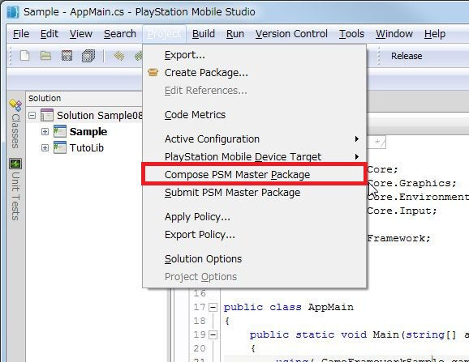
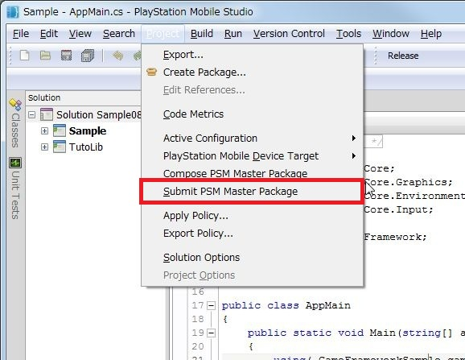

This document explains how to create a master package from the completed PSM application and how to submit it to SCE.
Contents
A master package is a group of files that are required to distribute a PSM application via the PS Store.
The master package is also abbreviated and called a "master".
Submit the PSM application in this master package format to SCE.
The following is the procedure for creating and submitting a master.
- Read the PSM application development guidelines and confirm in advance the requirements of the PSM application.
- Create a PSM application.
- Confirm that the created PSM application complies with the PSM application development guideline items.
- Set the MetaData category of the application information app.xml with the Publishing Utility.
- Create an application key for the PSM application and check operation on an actual device.
- Build the PSM application in the master package format with PSM Studio.
- Submit a master package to SCE.
- Set the PSM application and In-App Purchase price with DevPortal.
Note: Settings to create a master package are made to app.xml in sample/Tutorial/Sample08_02. Use it as reference when creating a master package.
Note: A master package cannot be created until a publisher license is purchased and bank account information is confirmed.
The PSM application development guidelines (hereafter "guidelines") is a document summarizing the requirements for PSM applications.
You must comply with these guideline items when distributing PSM applications in the PS Store.
Before submitting the master, confirm that the guideline items are satisfied, and then submit the master.
Set MetaData category of the application information app.xml with the Publishing Utility.
For details of Publishing Utility, refer to Using Publishing Utility.
Create a master package after completing the setting of the application information app.xml.
Note: Before creating a master package, create an application key corresponding to the PSM application and check operation on an actual device.
Note: A master package cannot be created until a bank account is registered and subsequent SCE proceedings are completed.
To create a master package, start PSM Studio, select [Release] on the build setting, and then select [Menu] - [Project] - [Compose PSM Master Package].
Figure 1 Create a Master Package
When building is successful, a master package with the extension psmp is created in the project's bin/Release folder.
Caution : When submitting a master package, SEN account and the Publisher Key must be the same as the one when the master package was created.And make sure the Publisher Key is not changed until this PSM App is distributed on PlayStation(R)Store.
To submit a master, select [Menu] - [Project] - [Submit PSM Master Package]. Follow the instructions displayed in the dialog to make your input.
Figure 2 Submit a Master Package
When master submission completes, make the following settings with DevPortal. https://psm.playstation.net
- Price setting of submitted PSM application.
- Price setting of In-App Purchase.
- Screen shot setting.
- Banner setting.